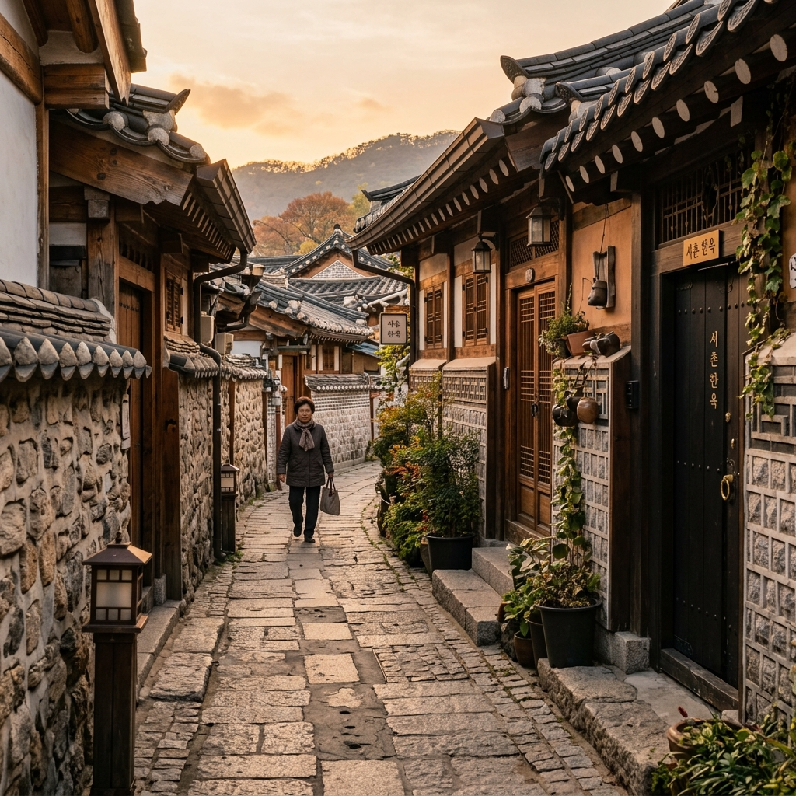
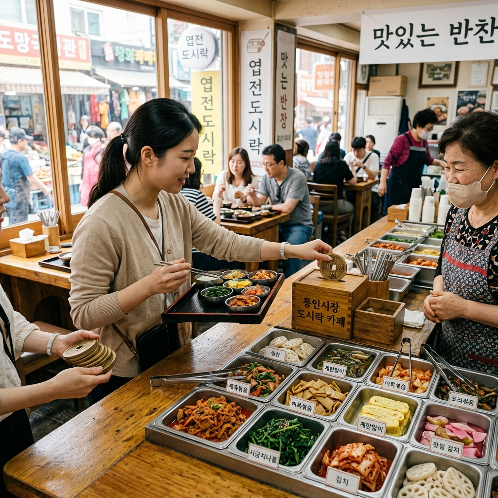
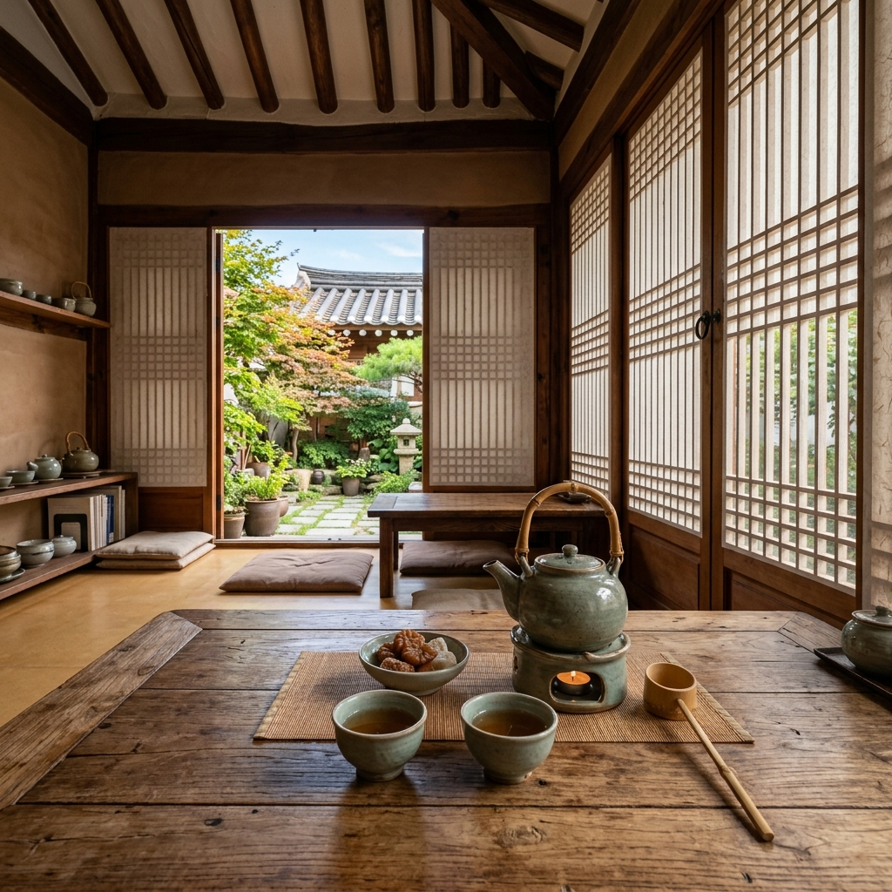

서울 서촌 통인동·체부동 골목 산책 2026 완전 가이드
— 경복궁 서쪽 한옥마을·통인시장 도시락 투어
서촌(西村)은 경복궁 서쪽 담장 바로 옆, 인왕산 자락과 청계천 발원지 사이에 자리한 서울의 가장 오래된 생활 골목 마을입니다. 북촌이 양반 사대부의 공간이었다면, 서촌은 조선시대 역관·의관·화원 등 중인(中人) 계층이 터를 잡고 살아온 터전으로, 예술과 생활이 뒤섞인 독특한 문화 DNA를 지금까지 고스란히 품고 있습니다.
2026년 현재 서촌은 통인동·체부동·누하동·옥인동 일대를 아우르는 광범위한 골목 문화 지구로 자리매김했습니다. 통인시장 도시락 카페의 엽전 체험, 이상(李箱)의 집·세종대왕 생가터 같은 역사 유적, 보안여관·류가헌 같은 독립 갤러리와 한옥 카페들이 서로 어우러져 단 하루 만에 역사·예술·미식 세 가지를 동시에 즐길 수 있는 서울 최고의 도보 여행지입니다.
이 가이드는 서촌의 골목 구석구석을 15년 이상 취재한 노하우를 바탕으로, 2026년 최신 정보로 완전히 업데이트된 서촌 완전 정복 매뉴얼입니다. 처음 방문하시는 분도, 여러 번 다녀온 분도 새롭게 발견할 이야기가 반드시 있을 것입니다.
| 항목 | 내용 |
|---|
| 위치 | 서울특별시 종로구 통인동·체부동·누하동·옥인동 일대 |
| 지하철 | 3호선 경복궁역 2번 출구 (도보 8~12분) |
| 버스 | 1020·7022·7212번 등 → 자하문고개·옥인시장 정류장 |
| 주차 | 경복궁 서쪽 공영주차장 (유료, 주말 혼잡), 도보 방문 권장 |
| 추천 소요 시간 | 4~6시간 (도시락 체험 + 골목 산책 + 카페 포함) |
| 최적 방문 시기 | 봄(4~5월) · 가을(10~11월), 평일 오전 10시~오후 1시 |
| 비용 예산 | 통인시장 도시락 약 4,000원~6,000원 + 카페 1~2잔 |
1. 서촌은 어떤 동네인가 — 경복궁 서쪽, 조선시대 중인 문화의 심장
서촌이라는 이름은 조선시대 한양의 공간 구분에서 비롯됩니다. 경복궁을 중심으로 동쪽에 북촌(北村)이 있었다면, 서쪽에는 서촌이 자리했습니다. 그러나 서촌이라는 명칭이 공식 행정 명칭으로 쓰인 적은 없습니다. 오히려 이곳 사람들은 오랫동안 '웃대'라는 고유한 이름으로 이 동네를 불러왔습니다. 인왕산 자락에서 내려오는 청계천 지류의 윗동네, 즉 물 위쪽 마을이라는 뜻입니다.
조선 후기, 이 골목에는 역관(譯官)·의관(醫官)·화원(畵員)·산원(算員) 등 기술직 중인 계층이 밀집해 살았습니다. 양반보다는 낮지만 평민보다는 높은 사회적 지위를 가졌던 이들은, 탄탄한 경제력을 바탕으로 문화와 예술을 적극적으로 후원하고 즐겼습니다. 조선 후기 최고의 문인 화가인 겸재 정선(鄭敾)이 바로 이 서촌에서 태어나 말년을 보냈으며, 그가 인왕산을 그린
「인왕제색도(仁王霽色圖)」는 서촌의 빗속 풍경을 조선 최고 수준의 필치로 담아낸 걸작으로 남아 있습니다.
근대에는 시인 이상(李箱)이 통인동 154번지에서 태어나 어린 시절을 보냈고, 시인 윤동주가 종로구 누상동 9번지 하숙집에서 연희전문학교 시절 시를 썼습니다. 화가 이중섭과 이상범, 소설가 현진건의 흔적도 이 골목 곳곳에 스며 있습니다. 서촌은 단순한 주거 공간이 아니라, 한국 근현대 예술과 문학의 살아있는 아카이브인 셈입니다.
2010년대 이후 젊은 예술가들과 독립 출판·공예 작가들이 저렴한 임대료를 찾아 하나둘 이주하면서 서촌은 다시 한번 문화 르네상스를 맞이했습니다. 오래된 한옥과 일제강점기 적산 가옥, 1970~80년대 연립주택이 뒤섞인 골목 사이로 인디 카페와 독립 갤러리, 공방이 들어섰습니다. 2026년 현재, 서촌은 젠트리피케이션의 압력 속에서도 특유의 생활 냄새와 골목 질감을 상당 부분 유지하며, 서울에서 가장 '사람 냄새 나는' 문화 동네로 자리를 지키고 있습니다.
2. 서촌 골목 진입 방법 — 지하철·버스·주차 완전 정리
서촌을 방문하는 가장 합리적인 방법은 단연 대중교통입니다. 특히 주말에는 통인동·효자로 일대가 주차 전쟁터가 되기 때문에, 자가용보다 지하철이나 버스 이용을 강력히 권장합니다.
지하철 이용 시 수도권 지하철 3호선 경복궁역에서 내리시면 됩니다. 2번 출구로 나와 효자로를 따라 북쪽으로 약 8~12분 걷다 보면 통인시장 입구가 나옵니다. 이 경로는 경복궁 서쪽 담장을 오른편에 두고 걷는 코스로, 담장 사이로 보이는 근정전 지붕선이 이미 서촌 산책의 서막을 열어 줍니다. 경복궁역 3번 출구를 이용하면 효자동 방향으로 진입해 체부동 골목부터 탐방을 시작할 수 있습니다.
버스 이용 시 서울 시내버스 1020번·7022번·7212번을 타면 자하문고개 또는 옥인시장 정류장에서 하차할 수 있습니다. 이 정류장들은 서촌의 북쪽(인왕산 쪽) 입구에 해당하므로, 인왕산·청운공원 방향에서 서촌을 내려오는 방식으로 탐방할 때 유리합니다.
자가용 이용 시 경복궁 서쪽 공영주차장(주소: 종로구 효자로 12 인근)이 가장 가깝습니다. 평일 기준 1시간에 약 1,000~1,500원 수준이지만, 주말에는 만차가 빈번하고 대기 시간이 30분을 넘기도 합니다. 골목 안은 차 한 대 겨우 지나는 폭의 일방통행 도로가 대부분이므로, 차량을 가지고 골목 깊숙이 진입하는 것은 피하시는 것이 좋습니다.
서촌 탐방 최적 시작점은 통인시장 입구(통인동 골목)와 자하문로7길(체부동 골목) 두 곳입니다. 처음 방문이시라면 통인시장 → 이상의 집 → 체부동 골목 → 보안여관 → 경복궁 영추문 순서로 남쪽에서 북쪽으로, 또는 자하문로7길에서 시작해 아래로 내려오는 순서를 추천합니다. 두 방향 모두 오르막과 내리막이 적당히 섞여 있어 무릎에 무리가 없습니다.

서촌 통인동 골목 — 돌담과 한옥 목조 대문이 어우러진 오후의 황금빛 골목 풍경 / AI 제작 이미지
3. 통인시장 도시락 카페 체험 — 엽전으로 만드는 나만의 도시락
서촌 방문의 하이라이트 중 하나를 꼽으라면 단연
통인시장 도시락 카페입니다. 1941년 일제강점기에 공설시장으로 출발한 통인시장은 70년 이상 종로구 주민들의 먹거리를 책임져 온 생활 시장입니다. 그 통인시장이 2012년 독특한 아이디어 하나로 전국적인 명소로 거듭났으니, 바로 '엽전 도시락 카페' 시스템입니다.
시스템은 이렇게 작동합니다. 우선 시장 안 도시락 카페 데스크에서
엽전(동전 모양의 식권)을 구입합니다. 1개에 500원짜리 엽전을 구입하면 도시락통과 엽전 봉투를 받습니다. 그 봉투를 들고 시장 통로를 따라 걸으면서 참여 상인 부스에서 원하는 반찬을 골라 담으면 됩니다. 계란말이 1엽전, 김치전 1엽전, 떡볶이 1엽전 식으로 각 부스마다 가격이 표시되어 있어, 총 4,000~6,000원 안팎의 엽전으로 열 가지 안팎의 반찬을 골라 담을 수 있습니다.
반찬을 다 담은 도시락통은 도시락 카페 2층 식당에서 밥 한 공기와 함께 즐길 수 있습니다. 2층 창가 자리에 앉으면 시장 통로 지붕 사이로 들어오는 햇살과 아래 시장의 활기찬 풍경이 한눈에 내려다보여, 여느 식당 못지않은 분위기를 자랑합니다. 특히 어르신 상인분들이 직접 만든 정갈한 가정식 반찬들은 화려한 맛집과는 다른, 진하고 소박한 감칠맛을 선사합니다.
도시락 카페는
화~일요일 오전 11시 30분부터 오후 1시 30분까지만 운영됩니다. 이 시간을 놓치면 체험이 불가능하므로, 반드시 오전에 서촌 방문을 시작해 통인시장 도시락 체험을 점심으로 잡아두는 일정을 짜시길 권합니다. 월요일은 휴무입니다. 단체 방문 시 예약이 가능하니, 10인 이상 그룹이라면 사전에 시장 측에 연락하시는 것이 좋습니다.
통인시장 안에는 도시락 카페 외에도 구경거리가 풍성합니다. 70년 전통의 기름떡볶이 집(원조 기름떡볶이는 국물 대신 기름에 볶는 서촌 고유 방식), 모둠전 부스, 직접 만든 두부·순두부 가게 등이 골목을 꽉 채우고 있습니다. 시장 중간쯤에는 손바닥만 한 천연 비누와 수제 향 양초를 판매하는 소공인 부스도 자리해, 기념품으로 구입하기에 제격입니다.
4. 골목별 카페·갤러리 추천 — 보안여관, 류가헌, 그리고 숨은 인디 갤러리들
서촌의 문화 지형도를 이야기할 때 빠질 수 없는 두 공간이 있습니다.
보안여관(普安旅館)과
류가헌(柳家軒)입니다. 두 곳 모두 역사적인 공간을 현대적 문화 플랫폼으로 재생한 서울의 대표적인 도시 재생 성공 사례입니다.
보안여관은 1936년에 개업한 여관입니다. 시인 서정주가 이곳에서 첫 시집 『화사집(花蛇集)』의 원고를 완성했다는 이야기가 전해져 내려옵니다. 2010년대 초 복합 문화 공간으로 탈바꿈한 뒤, 지금은 독립 서점·갤러리·카페·숙박이 모두 한 지붕 아래 공존하는 독특한 공간으로 운영됩니다. 특히 1층 갤러리에서는 국내외 신진 작가들의 전시가 연중 끊이지 않고 이어지며, 서점 코너에는 일반 서점에서 보기 어려운 독립 출판물과 예술 서적이 빽빽하게 꽂혀 있습니다. 여관 건물 특유의 낮은 층고와 좁은 통로, 나무 계단이 빚어내는 질감은 어느 신식 갤러리도 따라 할 수 없는 아우라를 자아냅니다.
류가헌은 사진 전문 갤러리로, 100년 이상 된 한옥을 개조해 사진 작품을 전시하는 독립 공간입니다. 뜨락이 있는 한옥 구조 덕분에 마당을 가로질러 전시실로 진입하는 과정 자체가 이미 하나의 경험입니다. 사진에 관심이 있는 분이라면 반드시 들러보실 것을 권합니다. 입장료는 전시에 따라 다르지만 대체로 5,000원 이하로 부담이 없습니다.
이 두 공간 외에도 서촌 골목 곳곳에는 이름 없는 작은 갤러리와 공방들이 숨어 있습니다. 자하문로7길을 걷다 보면 수제 도예 공방, 천연 염색 공방, 독립 사진 작가의 오픈 스튜디오 등을 예고 없이 만날 수 있습니다. 문이 열려 있으면 그냥 들어가도 실례가 아닙니다. 서촌은 '들어오는 손님'을 환영하는 골목 문화가 살아있는 동네입니다.
카페도 빠뜨릴 수 없습니다. 서촌에는 대형 프랜차이즈 카페보다 개인 운영 인디 카페가 훨씬 많습니다. 수성동 계곡 가는 길목의 작은 원두 로스팅 카페, 한옥 창고를 개조한 드립 커피 전문점, 체부동 뒷골목의 문학 카페 등이 특히 사랑받고 있습니다. 대부분 좌석이 10~20석에 불과하지만, 주인장이 직접 내려주는 커피 한 잔과 함께 골목의 고요함 속에 잠시 앉아 있는 경험은 서울 그 어느 카페도 대체할 수 없는 질감을 지닙니다.
5. 체부동 골목 — 세종대왕 생가터·이상의 집, 역사 탐방 코스
서촌에서 역사 탐방을 원하신다면 체부동과 통인동 일대의 역사 유적을 놓치지 마십시오. 좁은 골목 안에 조선시대부터 근현대까지 수백 년의 시간이 켜켜이 쌓여 있습니다.
세종대왕 생가터는 통인동 137번지 일대입니다. 조선의 네 번째 왕이자 한글을 창제한 성군 세종대왕이 1397년 이 서촌 골목에서 태어났습니다. 지금 그 자리에는 아파트가 들어서 있어 아쉽게도 생가 건물은 남아 있지 않지만, 도로변에 설치된 표지석이 이 사실을 기록하고 있습니다. 한글이 여기서 태어난 왕의 손에서 시작됐다는 사실을 생각하면, 그 작은 표지석 하나가 결코 작게 보이지 않습니다.
이상의 집은 통인동 154-10번지에 위치한 문화 공간입니다. 한국 근대 문학의 문제적 작가, 시인이자 소설가인 이상(李箱, 본명 김해경)이 어린 시절을 보낸 집터에 조성된 기념 공간으로, 이상의 작품 세계와 생애를 담은 상설 전시가 운영됩니다. 좁은 골목 안에 자리한 이 공간은 아기자기하고 소박하지만, 이상의 소설 속 미로 같은 내면 세계를 반영하듯 공간 구성 자체가 묘하게 얽혀 있습니다. 입장료는 무료이며 화~일요일 오전 10시부터 오후 6시까지 운영합니다.
윤동주 하숙집 터도 인근에 있습니다. 누상동 9번지 일대로, 시인 윤동주가 연희전문학교(현 연세대) 재학 시절 하숙을 하며 「별 헤는 밤」, 「자화상」 등의 시를 썼다고 전해지는 곳입니다. 지금은 일반 주택가로 변해 있지만, 윤동주 시인의 발자취를 따라 이 골목을 걷는 경험은 문학을 좋아하시는 분이라면 가슴 벅찬 시간이 될 것입니다.
체부동 골목은 이상의 집에서 자하문로를 따라 올라가면 자연스럽게 연결됩니다. 좁은 골목과 낮은 돌담 사이로 난 오솔길을 따라 걷다 보면, 오래된 한옥의 기와지붕과 현대식 빌라가 어색하지 않게 공존하는 서촌만의 독특한 도시 경관을 실감하게 됩니다. 골목 중간에는 오래된 이발소, 수십 년 된 문구점, 세대를 이어 운영하는 세탁소 같은 진짜 생활 상점들이 아직도 영업을 이어가고 있어, 관광지화된 북촌과는 또 다른 소박하고 살뜰한 분위기를 느끼실 수 있습니다.

통인시장 도시락 카페 — 엽전으로 다양한 반찬을 골라 담는 서촌 고유의 점심 문화 / AI 제작 이미지
6. 서촌에서 놓치면 안 되는 한옥 카페 베스트
서촌의 한옥 카페는 단순히 '예쁜 카페'가 아닙니다. 오래된 한옥의 구조를 최대한 살리면서도 현대적인 감각을 더해, 공간 자체가 하나의 작품이 된 곳들이 많습니다. 서촌을 방문할 때 한옥 카페 한 곳 이상은 반드시 들르시기를 권합니다.
수성동 계곡 입구 쪽 한옥 카페들은 인왕산 자락의 청량한 공기를 배경으로 차를 즐길 수 있는 최고의 환경을 갖추고 있습니다. 대부분 툇마루나 마당에 좌석을 마련해두어, 날씨 좋은 날에는 야외에서 차 한 잔을 즐기며 기와지붕 너머 인왕산 바위를 바라보는 경험이 가능합니다. 봄철에는 마당에 핀 라일락과 매화 향기가 더해져 감동이 배가됩니다.
자하문로7길 일대에는 20~30평 남짓한 소규모 한옥 카페들이 모여 있습니다. 낮은 문을 허리를 숙여 통과하면 나타나는 아담한 대청마루 좌석, 한지 창호 사이로 스며드는 은은한 자연광, 도예가의 핸드메이드 찻잔에 내어주는 전통 차 한 잔은 오래도록 기억에 남는 서촌만의 경험입니다. 녹차·우전·보이차·수국차 등 차 종류도 다양하며, 계절마다 특별 메뉴가 바뀌어 재방문 이유가 됩니다.
커피 전문점을 원하신다면 통인시장 인근 골목 안의 독립 로스터리 카페들을 찾아보시기 바랍니다. 직접 생두를 로스팅하는 소규모 카페들이 서촌 특유의 미니멀한 인테리어와 결합해, 커피 한 잔에 골목 산책의 여운까지 담아줍니다. 대부분 아메리카노 기준 5,000~6,500원 수준이며, 특정 싱글 오리진 원두를 사용하는 핸드드립을 시그니처로 삼는 곳이 많습니다.
한옥 카페 방문 시 유의하실 점이 있습니다. 많은 카페가 좌석 수가 매우 적어(10~15석 내외) 피크 타임(주말 오후 12시~3시)에는 대기가 발생합니다. 이 시간대에는 줄을 서기보다 먼저 골목을 산책하다가 비피크 타임에 방문하시는 것이 훨씬 여유로운 경험을 보장합니다. 또한 일부 카페는 현금 결제만 가능하니, 소액 현금을 준비해두시면 당황하실 일이 없습니다.
7. 경복궁 영추문·창의문 연계 산책 코스
서촌 산책의 묘미 중 하나는 경복궁과의 자연스러운 연계입니다. 서촌 골목에서 동쪽으로 조금만 걸어 나가면 경복궁의 서쪽 문인
영추문(迎秋門)이 나오고, 북쪽으로 더 올라가면 서울 성곽의 북서쪽 관문인
창의문(彰義門, 일명 자하문)이 나옵니다. 이 두 문을 잇는 산책로는 서촌과 경복궁, 그리고 서울 성곽을 하나의 동선으로 연결하는 환상적인 코스입니다.
영추문은 경복궁 서쪽 담장에 위치한 작은 문으로, 조선시대에는 궁의 서쪽 출입을 담당하는 실용적인 문이었습니다. 지금은 관람객들이 경복궁 입장 시 주로 이용하는 광화문이나 신무문에 비해 훨씬 한적하고 조용한 분위기입니다. 영추문 앞에서 서촌 골목 방향을 바라보면, 골목 끝으로 인왕산 능선이 솟아 있는 서울 도심의 압축된 풍경을 감상할 수 있습니다.
창의문은 서울 성곽 북서쪽의 관문으로, 1396년 태조 이성계가 한양 성곽을 쌓을 때 함께 조성된 성문입니다. 임진왜란 때 소실되었다가 1741년 영조 대에 중건되었으며, 현재 남아 있는 서울 성곽 4소문 중 가장 원형에 가까운 형태를 유지하고 있어 문화재적 가치가 매우 높습니다. 창의문 주변에는 인왕산 성곽 등산로 입구가 있어, 가벼운 트레킹을 원하시는 분들에게 더할 나위 없이 좋은 출발점이 됩니다.
영추문 → 체부동 → 통인시장 → 청운공원 → 창의문으로 이어지는 4~5km 코스는 서촌의 역사, 생활, 자연을 모두 아우르는 완성형 산책 루트입니다. 전 코스가 완만한 오르막과 내리막으로 구성되어 있어 어르신이나 아이들과 함께 걸어도 무리가 없습니다. 코스 중간에 통인시장 도시락으로 점심을 해결하고, 창의문에 도착해 인왕산 성곽의 웅장한 바위 능선을 바라보며 마무리하는 하루는 서울 도심에서 가능한 최고 수준의 도보 여행 경험 중 하나입니다.
8. 서촌 맛집 & 베이커리 — 골목 음식의 진면목
서촌의 맛집 씬(scene)은 인스타그램 핫플보다는 수십 년의 세월이 쌓인 골목 음식에 방점이 찍혀 있습니다. 물론 최근 몇 년 사이 젊은 셰프들의 창작 식당이나 정성스러운 베이커리가 많이 생겨났지만, 서촌의 진짜 맛은 역시 오래된 상인들의 손맛에서 나옵니다.
기름떡볶이는 서촌을 이야기할 때 빠질 수 없는 음식입니다. 통인시장 안 원조 기름떡볶이 집은 고추장 양념의 국물 떡볶이가 아니라, 간장 양념을 얹어 기름에 볶아내는 방식으로 만듭니다. 떡의 바깥쪽은 살짝 바삭하면서 속은 쫄깃한, 여느 떡볶이와는 완전히 다른 식감과 풍미를 자랑합니다. 시장 안 서너 곳이 원조를 주장하며 경쟁하고 있으니, 모두 조금씩 맛보시는 것도 재미있는 방법입니다.
한옥 식당들도 서촌의 자랑입니다. 자하문로 인근에는 한옥 개조 식당에서 제철 채소를 활용한 한식 단정식을 내놓는 곳들이 몇 군데 있습니다. 상차림은 소박하지만 재료 하나하나가 건강하고 정갈하여, 관광지 주변의 화려하지만 실망스러운 한식과는 완전히 다른 차원의 만족감을 줍니다. 대부분 사전 예약제로 운영하거나 점심 타임이 한정되어 있으니 방문 전 전화 확인을 권합니다.
베이커리 면에서도 서촌은 최근 눈에 띄게 성장했습니다. 통인동·누하동 골목 안에는 천연 발효종(르뱅)을 사용하는 하드 브레드 전문 베이커리, 쌀가루를 활용한 전통 구움과자 전문점, 당일 굽는 크루아상 전문 카페 등이 등장해 골목 탐방 중 출출함을 달래주고 있습니다. 특히 오전 9~11시 사이에 방문하면 갓 구워낸 빵의 향기가 골목 전체를 가득 채우는 황홀한 경험을 할 수 있습니다.
식사 후 디저트로는 오래된 한옥 찻집에서 즐기는
수정과·식혜·오미자차를 강력 추천합니다. 달콤하고 시원한 전통 음료 한 잔이 기름진 떡볶이 뒤 입가심으로 완벽한 역할을 하며, 서촌 특유의 한국적 정서를 오감으로 완성해 줍니다.

서촌 한옥 찻집 — 창호지 문과 격자창 너머로 마당이 내다보이는 고즈넉한 오후의 차 한 잔 / AI 제작 이미지
9. 주말 vs 평일 서촌 방문 전략 — 혼잡도·주차·최적 타이밍
서촌은 주말과 평일의 분위기가 상당히 다릅니다. 이 차이를 미리 알고 방문하시면 훨씬 만족스러운 경험을 할 수 있습니다.
주말 방문의 경우, 오전 11시부터 오후 3시 사이는 서촌 역사상 가장 복잡한 시간대입니다. 통인시장 앞 도로에서 보안여관까지 이르는 200여 미터 구간은 인파로 가득 차 제대로 된 골목 사진을 찍기 어려울 정도입니다. 주말에 서촌을 방문하신다면
오전 9시 이전 조기 입장을 강력히 권합니다. 이 시간대에는 골목이 한산하고 빛도 부드러워, 서촌 골목의 진짜 아름다움을 온전히 누리실 수 있습니다. 오전 산책 후 11시 30분 도시락 카페 개장 시각에 맞춰 통인시장으로 이동하면, 대기 없이 자리를 잡을 수 있습니다.
평일 방문은 서촌의 '생활 골목'다운 면모를 가장 잘 경험할 수 있는 선택입니다. 주민들이 아침 장을 보고, 어르신들이 마당에서 화분을 돌보고, 카페 사장님이 여유롭게 청소하는 일상의 풍경 속에 여행자로 스며드는 경험은 평일만의 특권입니다. 대부분의 갤러리와 카페도 평일에는 즉시 입장이 가능하며, 주인장과 여유롭게 이야기를 나눌 기회도 훨씬 많습니다.
주차 전략에 대해서도 말씀드려야겠습니다. 앞서 말씀드렸듯 서촌은 주말 주차가 매우 어렵습니다. 대안으로 경복궁 공영주차장(광화문 인근)에 주차한 뒤 도보로 서촌까지 이동하는 방법이 있습니다. 약 15~20분 거리이지만, 경복궁 담장을 끼고 걷는 이 경로 자체가 훌륭한 워밍업 산책이 됩니다. 또는 서촌에서 1.5km 거리의 광화문 일대 민영 주차장을 이용하시는 것도 현실적인 선택입니다.
날씨와 계절 전략도 중요합니다. 서촌 골목은 대부분 좁고 나무 그늘이 적어, 한여름 오후에는 뙤약볕이 강합니다. 6~8월 방문 시에는 이른 아침이나 해 질 무렵 방문을 권하며, 선크림과 접이식 우산은 필수 준비물입니다. 반면 10~11월 단풍 시즌에는 인왕산 자락의 붉고 노란 단풍이 서촌 기와지붕과 어우러져 한 해 중 가장 아름다운 풍경을 자아냅니다. 이 시기에는 오후 3시쯤 방문하면 석양빛이 서촌 골목에 황금빛으로 쏟아지는 마법 같은 순간을 목격하실 수 있습니다.
💡 서촌 방문 핵심 팁 모음
① 통인시장 도시락 카페는 화~일 11:30~13:30만 운영. 월요일 휴무.
② 이상의 집 무료 입장, 화~일 10:00~18:00 운영.
③ 주말 오전 9시 이전 방문 시 한산한 골목 독점 가능.
④ 골목 안 상점 일부는 현금 결제만 가능. 소액 현금 필수.
⑤ 편한 신발 필수 — 골목 바닥이 돌블록·경사로 혼합.
⑥ 경복궁 관람을 함께 원한다면 영추문 입장권 별도 구매.
10. 서촌 인근 연계 명소 — 인왕산·청운공원·수성동 계곡
서촌 산책을 마치셨다면, 바로 인근의 자연 명소들과 연계해 하루를 더욱 풍성하게 마무리하실 수 있습니다. 서촌은 인왕산 자락 바로 아래에 위치해 있어, 골목 끝에서 등산로 초입까지 불과 10~15분 거리입니다.
수성동 계곡(水聲洞溪谷)은 인왕산에서 흘러내리는 작은 계곡으로, 서울 도심에서 이렇게 맑고 시원한 계곡물을 만날 수 있다는 사실이 놀라울 정도입니다. 겸재 정선이 이 계곡을 소재로 그린 그림이 전해질 만큼 역사 깊은 명소이기도 합니다. 계곡을 건너는 돌다리인 기린교(麒麟橋)는 조선시대에 놓인 석교로, 현재도 원형이 잘 보존되어 있습니다. 여름에는 계곡 물소리가 도심의 소음을 씻어내고, 가을에는 단풍이 계곡 물에 반사되어 그림 같은 풍경을 연출합니다.
청운공원은 자하문로 인근에 위치한 작은 도심 공원입니다. 정식 명칭보다 '서촌 위 언덕 공원'으로 더 친숙한 이곳은, 서울 도심과 북악산·인왕산의 능선을 함께 조망할 수 있는 숨은 전망 포인트입니다. 청운공원 정상에서 남쪽을 바라보면 서촌 기와지붕 너머로 경복궁 근정전 지붕과 멀리 N서울타워가 겹쳐 보이는 서울의 압축 파노라마를 감상하실 수 있습니다. 공원 자체는 아담하지만, 벚꽃 시즌(4월 초~중순)에는 벚꽃 터널이 형성되어 서울에서 가장 호젓한 벚꽃 명소 중 하나로 꼽힙니다.
인왕산 성곽 등산을 원하시는 분은 창의문에서 인왕산 성곽로를 따라 인왕산 정상(338m)까지 오르는 코스를 추천합니다. 편도 약 45~60분 거리로, 서울 도심 산 치고는 제법 오르막이 있지만 그만큼 정상에서 바라보는 서울 전경이 압도적입니다. 성곽을 따라 보이는 북악산·북한산 능선과 발아래 펼쳐지는 종로구·마포구 일대 도심 풍경은 서울을 오랫동안 살았던 분들도 새삼 감탄하게 만드는 뷰입니다.
인왕산 선바위(禪巖)는 인왕산 중턱에 위치한 거대한 바위로, 그 모습이 승려가 앉아 참선하는 형상과 닮아 이름이 붙었습니다. 조선시대에는 무속 신앙의 성지로 여겨졌으며 지금도 바위 주변에 무속 기도 공간이 있습니다. 독특한 문화 경관을 경험하고 싶은 분들에게 특별한 방문지가 될 것입니다. 서촌 골목 산책과 인왕산 성곽·수성동 계곡 탐방을 하루 코스로 묶으면, 서울에서 즐길 수 있는 가장 충실하고 다채로운 당일치기 여행이 완성됩니다.
11. 서촌 사진 촬영 스팟 & 인스타 구도 완전 가이드
서촌은 사진 찍기 좋은 장소가 넘쳐납니다. 다만 북촌처럼 '인증 사진 명소'가 집중되어 있기보다, 골목 곳곳에 예상치 못한 아름다운 순간들이 숨어 있습니다. 사진 촬영을 목적으로 방문하신다면 다음 팁을 참고하세요.
통인시장 홍살문 앞은 시장의 붉은 홍살문과 골목 안쪽의 시장 모습을 함께 담을 수 있는 클래식한 포인트입니다. 아침 일찍 방문하면 골목 끝에서 쏟아지는 역광이 홍살문 붉은 기둥과 극적인 대비를 이루는 사진을 찍을 수 있습니다.
이상의 집 골목 입구는 좁은 골목과 낮은 담장, 그 끝에 보이는 나무 한 그루가 만들어내는 구도가 압권입니다. 광각 렌즈보다는 50mm 표준 화각이 골목의 실제 느낌을 가장 잘 담아냅니다.
수성동 계곡 기린교는 돌다리 위에서 계곡 상류 방향과 하류 방향 모두 사진이 잘 나오는 명소입니다. 여름철 이른 아침에는 계곡 물안개가 피어오르는 몽환적인 장면도 포착할 수 있습니다.
창의문 안쪽 풍경은 성문 홍예(아치형 통로) 너머로 북악산 능선이 프레임처럼 잡히는 구도가 일품입니다. 성문 안에서 밖을 향해 찍으면 서울 성곽의 돌담과 하늘이 극적인 대비를 이루는 사진을 얻을 수 있습니다.
촬영 시 한 가지 중요한 당부를 드립니다. 서촌은 실제 주민들이 생활하는 동네입니다. 한옥 담장 너머를 무단으로 촬영하거나, 주민 동의 없이 개인 공간에 진입해 사진을 찍는 행동은 삼가주시기 바랍니다. 특히 최근 몇 년간 주민들의 프라이버시 침해 민원이 늘어나고 있어, 골목에서 카메라를 들이댈 때는 항상 주변을 배려하는 여행자 예절을 지켜주십시오. 서촌이 지금의 매력을 유지할 수 있는 것은, 이 골목에서 오늘도 삶을 이어가는 주민들 덕분이라는 사실을 잊지 마시기 바랍니다.
서촌 당일 추천 코스 (5시간 기준)
09:00 경복궁역 2번 출구 출발 → 경복궁 서쪽 담장 길 도보
09:20 이상의 집 관람 (약 30분)
10:00 체부동·통인동 골목 자유 탐방 (보안여관, 류가헌 등)
11:30 통인시장 도시락 카페 점심 체험
13:00 서촌 한옥 카페 디저트 타임
14:00 자하문로7길 → 청운공원 → 창의문 산책
15:00 수성동 계곡 탐방 후 인왕산 선바위 방문 (선택)
16:00 서촌 베이커리 카페에서 마무리
12. 서촌 여행 준비 체크리스트 & 에티켓 안내
서촌 방문을 계획하고 계신 분들을 위해, 현지에서 바로 쓸 수 있는 실용적인 체크리스트를 정리했습니다. 이 항목들을 미리 확인하시면 서촌에서의 하루가 훨씬 매끄럽고 즐거운 경험이 될 것입니다.
준비물 체크리스트를 먼저 살펴보겠습니다. 편안하고 밑창이 두꺼운 운동화는 필수입니다. 서촌 골목은 대부분 돌블록이나 오래된 콘크리트 포장으로 이루어져 있으며, 인왕산·청운공원 방향으로 올라갈수록 경사가 있어 하이힐이나 슬리퍼 착용은 피하시기 바랍니다. 가방은 양손이 자유로운 백팩이나 크로스백을 권합니다. 골목이 좁아 큰 캐리어는 다른 방문객에게 불편을 줄 수 있습니다. 소액 현금도 반드시 준비하세요. 통인시장 도시락 카페 엽전 구입, 시장 내 상점, 일부 한옥 카페는 카드 단말기가 없는 경우가 있습니다. 2만~3만 원 정도의 현금이면 충분합니다.
에티켓 안내도 중요합니다. 서촌은 관광지이기 이전에 주민들의 삶의 터전입니다. 이른 아침이나 저녁 시간대에 큰 소리로 대화하거나 스피커로 음악을 트는 행동은 주민들에게 큰 민폐가 됩니다. 또한 한옥 골목에서 무단으로 대문을 열거나 담장 안을 들여다보는 행동, 주민 사유지 내에서의 촬영 등은 엄격히 삼가 주시기 바랍니다. 쓰레기는 반드시 가지고 나가시거나 지정 쓰레기통에만 버려 주시기 바랍니다. 서촌 골목이 이토록 깨끗하고 아름다운 것은 매일 새벽 이 골목을 청소하는 주민들의 노력 덕분입니다.
반려동물 동반 방문의 경우, 서촌 골목 대부분의 카페와 갤러리는 반려동물 입장이 불가합니다. 야외 골목 산책은 목줄 착용 상태에서 가능하지만, 통인시장 내부는 위생 문제로 반려동물 입장이 제한됩니다. 반려동물과 함께 방문하시는 분은 사전에 방문 예정 카페에 반드시 문의하시기 바랍니다.
어린이·유모차 동반 방문 시에는 골목 일부 구간이 좁고 경사가 있어 유모차 이동이 불편할 수 있습니다. 유모차보다는 아기 캐리어(슬링·백팩 타입)를 권장합니다. 어린이와 함께 방문하신다면 통인시장 도시락 체험과 이상의 집 관람이 교육적 즐거움과 체험 재미를 동시에 제공하므로 특히 추천합니다.
#서촌
#통인시장
#서촌골목
#통인동
#체부동
#한옥카페
#경복궁서쪽
#서울도보여행
#도시락카페
#서울여행2026